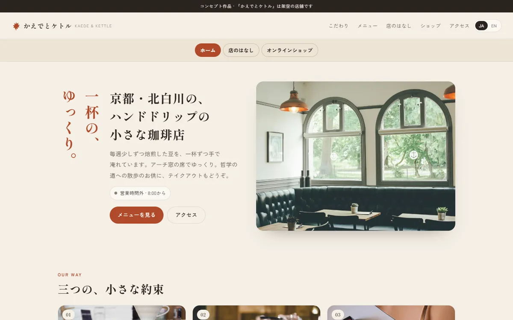
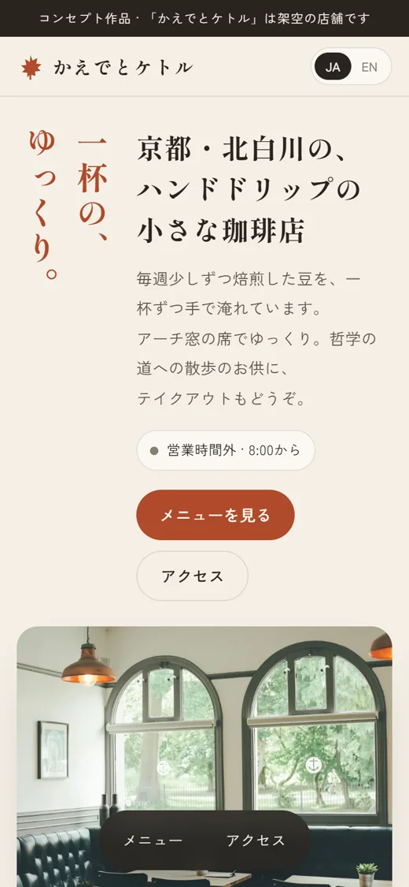
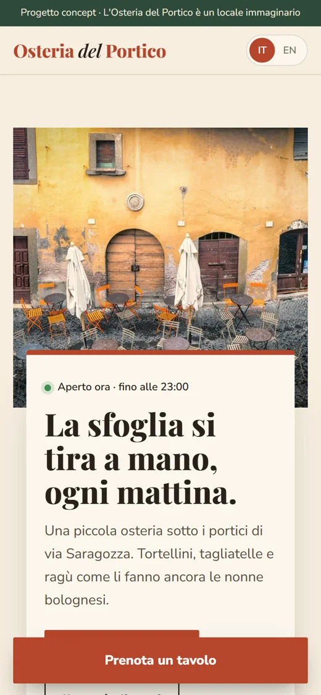
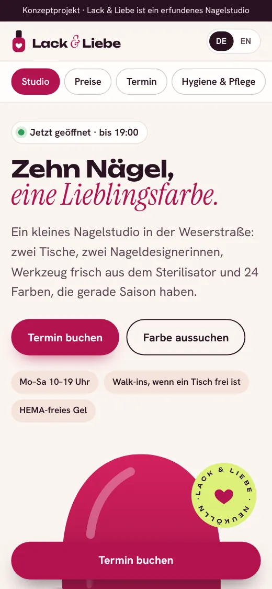
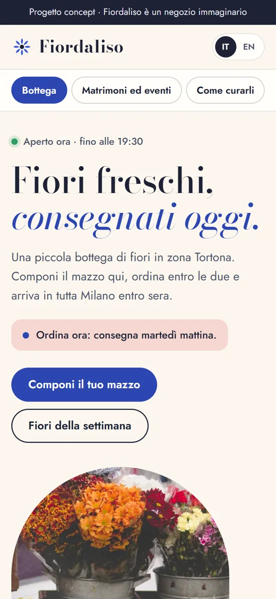
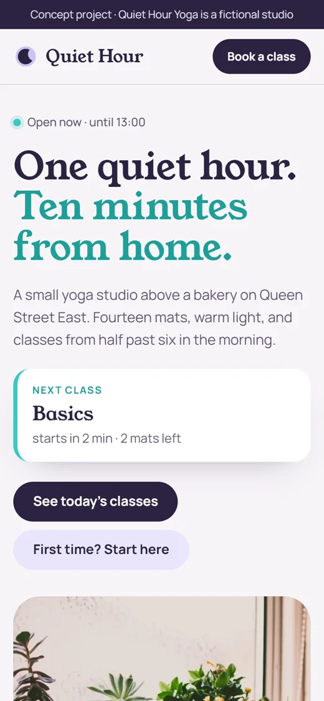

新規のご相談を受付中
カフェ、サロン、レストラン、街のお店のための小さな制作スタジオ。6つの都市に、お店へ直接伺う現地パートナーがいます。
どこかで、いつもお店が開いている。
01 / 6つの都市
どの街でも、現地のパートナーがお店に伺い、写真を撮り、公開後も窓口であり続けます。デザインと制作はスタジオのチームが担当します。
02 / 制作例
コンセプト作品です。お店は架空ですが、つくり方は本物です。
コンセプト · 飲食 · ロンドン
いま棚に何が残っているかが分かる、パン屋のサイト
コンセプト · 飲食 · 大阪
来店前に注文を決められる、ラーメン屋のサイト


コンセプト · 飲食 · 京都
哲学の道へ歩く人のための、静かな珈琲店のサイト




03 / 選ばれる理由
一度にお受けするお店の数を絞っています。担当は最初から最後まで、あなたの街のパートナーひとりです。
04 / 流れ
05 / お約束
最初のお客さまのサイトが公開されたら、ここに感想を載せます。
06 / お問い合わせ
質問は三つだけ。初回のご相談は無料で、お申し込みの義務はありません。
hmohammadjavad48@gmail.com
当てはまるものをすべて選んでください。
コピーして hmohammadjavad48@gmail.com に送ってください。担当のパートナーが1営業日以内にお返事します。